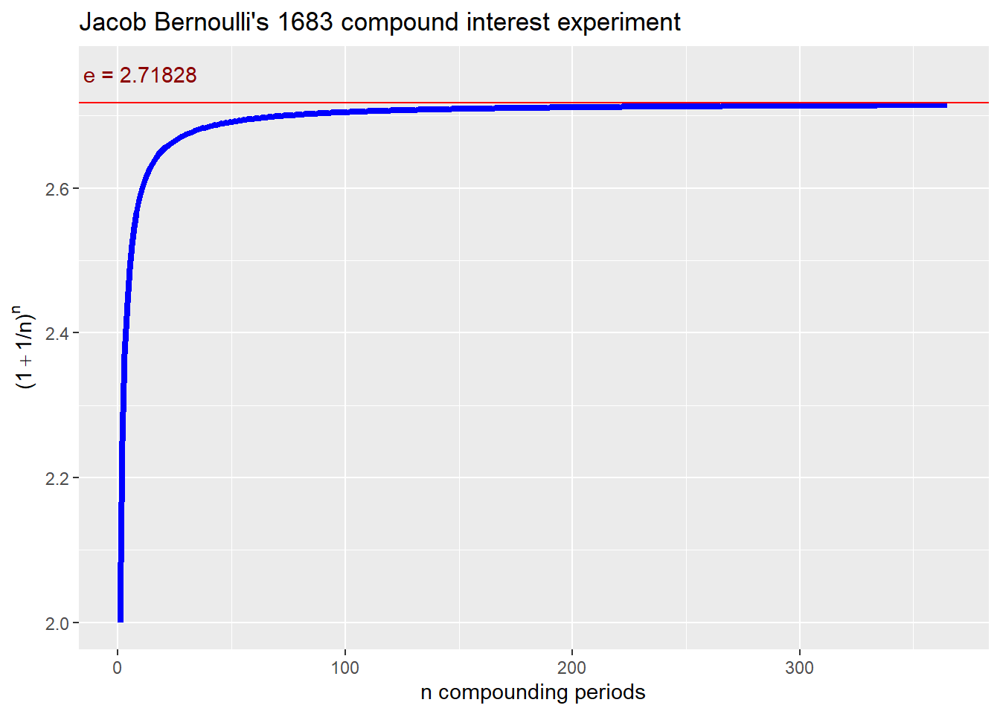

Chapter 9 Appendix: useful financial concepts
In this appendix we will discuss returns, especially continuously compounded returns, net present value, internal rate of return, foreign exchange markets, and other fascinating topics.
9.0.1 A question is raised
Why do we take differences of logarithms to calculate returns?
A great question deserves a story.
You can find the source code here.
9.0.2 Jacob Bernoulli has a story to tell
In 1683, Jacob Bernoulli posed this problem in compound interest:
- Invest 1 ducat for 1 year at 100% interest. This yields
\[ I = I ( 1 + r) ^t = 1 (1 + 1)^1 = 2 \] \indent where \(I =\) investment at the beginning of the year, \(r =\) the return in one year, and \(t =\) the number of years (in this case simply 1 year).
- Invest 1 ducat for one-half a year at annual rate $r = $ 1 and semi-annual equivalent $r/2 = $0.5. Reinvest what you earn in one-half a year for another one-half a year. This yields
\[ I = I ( 1 + r/2) (1 + r/2) = 1 (1 + 0.5)^2 = 2.25 \] 3. Invest 1 ducat for one-quarter of a year at annual rate $r = $ 1 and quarterly equivalent $r/4 = $0.25. Reinvest what you earn in a quarter for another quarter. Invest the two quarter balance for the third. Invest the three quarter balance for the fourth and final quarter. This yields
\[ I = I ( 1 + r/4) (1 + r/4) (1 + r/4) (1 + r/4) = 1 (1 + 0.25)^4 = 2.441 \]
- Cut up the quarter into smaller and smaller time units, also known as compounding periods. Say we are now at an investment period of only one day. There are 365 days in this year. There are thus 365 compounding periods. Using the same logic we get
\[ I = I ( 1 + r/365) (1 + r/365) ... (1 + r/365) = 1 (1 + 0.003)^{365} = 2.715 \]
In general, Bernoulli was calculating the expression
\[ \left(1 + \frac{1}{n}\right)^n \] as \(n \rightarrow \infty\), that is, as the number of compounding periods \(n\) got ever larger. In the limit, this expression converges to the transcendental number \(e=\) 2.718.
In finance, this is the equivalent of earning 2.718 ducats in a year for an investment of 1 ducat at the beginning of the year at 100% rate of return per year compounded continuously.
Here is a picture of the calculated approximation of \(e\) versus the number of compounding periods \(n\).
library(ggplot2) # to plot e approximation versus number of compounding periods
library(latex2exp) # to build latex math expressions in ggplot using TeX to generatelatex string
options(digits = 5) # overall rounding
r <- 1 # 100% annual rate of return as in Bernoulli (1683)
t <- 1 # one year as in Bernoullil (1683)
n <- 1:365 # number of compounding periods
e_approx <- (1 + r/n)^n # vector of e approximations
e_asymptote <- round(exp(r*t), 5) # need to round result for ggplot
e_label <- paste0("e = ", e_asymptote) # horizontal label for asymptote
e_title <- "Jacob Bernoulli's 1683 compound interest experiment" # graph title
y_label <- TeX('$(1 + 1/n)^n$') # rmarkdown needs \\ for latex escape
e_df <- data.frame(e_approx = e_approx, n = n) # data frame needed for ggplot
ggplot(e_df, aes(x = n, y = e_approx)) +
ylab(y_label) +
xlab("n compounding periods") +
geom_line(color = "blue", size = 1.5) +
geom_hline(yintercept = e_asymptote, color = "red") +
annotate("text", label = e_label, x = 10, y = e_asymptote + 0.04, color = "darkred" ) +
ggtitle(e_title) Calculations are rounded to 5 decimal places.
9.0.3 Where’s the finance?
In finance, and in Bernoulli’s example, \(r =\) 1.00, or an annual return of 100%. For a duration of \(t=\) 1 year, an investor would earn
\[ Ie^{rt} = 1 \times e^{1.00 \times 1} = 2.71828 \] if the investor could earn continuously through every minute, every second of every day in the year.
For example, let the investor earn \(r=\) 5% per year on a $1,000 investment for one month. The number of years in a single month is a fraction \(t=1/12\) 0.08333. The investor would have at the end of a month
\[ Ie^{rt} = 1000 \times e^{0.05 \times (1/12)} = 1004.17536 \]
We calculate the inverse of \(e^{rt}\) to calculate, isolate \(r\). This \(r\) is the annually continuously compounded rate of return. In algebra, \(e\) is the base and \(rt\) is the exponent.
The inverse of any exponential term is the logarithm. The natural logarithm, \(ln()\), is the logarithm to the base \(e\). For any base raised to a power, the logarithm answers the question: “What is the power?” In finance, we have a future value. With continuous compounding, we ask: “What is the corresponding rate of return?”
Here date 0 is the beginning of the month and date 1 is the end of the month. Let’s name the result at the end of one month \(I_1\) and the investment at the beginning of the month \(I_0\). Then we have with continuous compounding
\[ I_1 = I_0 e^{rt} \] Divide both sides of the this equation by \(I_0\) to get \[ \frac{I_1}{I_0} = e^{rt} \] Then take logarithms of both sides to isolate \(rt\) to get \[ ln \left(\frac{I_1}{I_0}\right) = ln(e^{rt}) = rt \] From algebra we know that the log of a ratio is the same as the difference of the logs of the numerator and denominator. Then also dividing both sides by \(t\), the holding period, we have \[ r = \frac{ln(I_1)-ln(I_0)}{t} = \frac{6.91192 - 6.90776}{0.08333} = 0.05 \] We must remember that this is the annual rate of return continuously compounded over a one month holding period.
9.0.4 The answer please?
The difference in logarithms is equivalent to the logarithm of the ratio of future to present value. The difference must be divided by the fraction (or multiple) of the annual holding period.
Subtract one and it looks a lot like a percentage change in value, also known as the rate of return.
9.1 Net present value
9.1.1 What is net present value?
Net present value (NPV) is the present value of the cash flows at the required rate of return of your project compared to an initial investment. In practical terms, it’s a method of calculating your return on investment, or ROI, for a project or expenditure. By looking at all of the money we expect to make from the investment and translating those returns into today’s dollars, you can decide whether the project is worthwhile.
We translate all of the future cash flows into today’s dollars (or euros, yen, name it) by finding the present value of those flows. Present value is the amount of money today that fans out into future cashflows at a rate of return for each future period in which cash flow occurs. This process and metric is also referred to as the time value of money.
9.1.2 What do companies typically use it for?
When a manager needs to compare projects and decide which ones to pursue, there are generally three options available: internal rate of return, payback method, and net present value. There are two reasons why financial analysts and investors use NPV.
NPV considers the time value of money, translating future cash flows into today’s dollars.
It provides a concrete number that managers can use to easily compare an initial outlay of cash against the present value of the return.
It’s far superior to the payback method, which is the most commonly used. The attraction of payback is that it is simple to calculate and simple to understand: when will you make back the money you put in? But it doesn’t take into account that the buying power of money today is greater than the buying power of the same amount of money in the future. That’s what makes NPV a superior method. With financial calculators and Excel spreadsheets, NPV is now nearly just as easy to calculate as payback.
Managers also use NPV to decide whether to make large purchases, such as equipment or software. It’s also used in mergers and acquisitions (though it’s called the discounted cash flow model in that scenario). In fact, it’s the model that Warren Buffet uses to evaluate companies. Any time a company is using today’s dollars for future returns, NPV is a solid choice.
9.1.3 How can we calculate NPV?
There is an NPV function in Excel that makes it easy once you’ve entered your stream of costs and benefits. Many financial calculators, including ones on smart phones, also include an NPV function.
Here is the math behind NPV. Let’s suppose we have this information about a contract your very good business associate wants to sell you for $950 today. You hope you can earn at least what the market makes. That amount is 10% per year. This means that if you put $1 into the earning machine, you expect $1.10 in one year.
Year Cash Flow 1 100 2 1100
How do we know if the price of the contract is right? We find the contract’s net present value. Here’s how we do it.
The calculation looks like this:
Find the amount of money today that translates into $100 in one year at 10% per year, that is, find the present value of $100 in one year at 10%. Call this number PV1.
\[ PV_1(1+0.10)=100 \]
Solve for PV_1 to get
\[ PV_1=1001.10=90.91 \]
Find the amount of money today that translates into $1,100 in two years at 10% per year, that is, find the present value of $1,100 in two years at 10%. Call this number \(PV_2\). We do this in two steps. In one year \(PV_2\) will grow at 10% this way:
\[ PV_2(1+0.10) \]
From the end of year one to the end of year two, PV2(1.1) will grow into this amount:
\[ PV_2(1+0.1)(1+0.1) \]
All of this will yield $1,100:
\[ PV2(1.1)(1.1)=PV2(1.1)2=1100 \]
Solve for the amount of money today that grows at 10% per year to yield $1,100 in two years, PV2: PV2=11001.12=909.91
Pull all of this into the Net Present Value (NPV). Today you pay $950, or a negative cash flow of 50. Today you would have in present value $90.01 for the first year’s worth of cash flow, and $909.91 for the second year’s worth of cash flow.
\[ NPV=−950+PV1+PV2=−950+90.91+909.91=50 \]
If NPV > 0, then today’s value of future cash flows, given your expectation of return, exceeds what you paid for the investment. If NPV = 0, you have break-even. If NPV < 0, then the investment costs more than your expectations of value. Since NPV = 50 > 0, you would believe that the investment is more valuable than what you pay for it, so, yes, indeed you might take up your friend on this offer.
9.1.4 What can go wrong?
There are three things that managers need to be aware of when using NPV.
The result might be difficult to explain to others. You would need to establish that the goal is to find value. But this depends on your expectations of the growth in your initial investment. If you believe that there is more value in this contract than the asking price, then you should buy the contract. NPV helps you understand that phrase “more value.”
Your expectations of the future growth of money might be wrong. This means that the rate above is higher or lower than 10%. For example if the rate is really 15%, then
\[ NPV=−950+\frac{100}{1.15^1}+\frac{1100}{1.15^2}=−31.29 \]
In this case NPV < 0 and this would be a bad value deal. You would be paying more that you think the contract is worth, in fact $31.29 more.
You do not receive all of the cash flow that is promised. Suppose the contract defaults (a little bit!) and your business associate can only assure you that she can pay you 75 cents on the dollar in a worse case scenario. NPV=−950+(0.75)100/1.10+(0.75)1100/1.102=−200 Here we figure we only make $75 in the first year for sure and $825 in the second year. Quite a potential loss! If we truly believe that this scenario could occur, then this is indeed a really bad deal!
9.2 Internal rate of return
9.2.1 What is the internal rate of return?
The internal rate of return (IRR) is the discount rate when the net present value (NPV) is zero, or breaks even. If the cash flows come from a bond or other fixed income instrument, then the IRR is also called the yield and also the yield to maturity (YTM).
When the NPV breaks even, the present value of negative (investing) cash flows equals the present value of positive (earning) cash flows. It is a true inflection point of equilibrium that balances cash flows for a project, financial instrument, portfolio, or contract. At this point no one would want to buy or sell. In fact at that point there are no further value gains or losses. Gains exactly equal losses. This indeed is the definition of a market clearing equilibrium.
What do companies typically use IRR for? If anything at all, the IRR is a benchmark measure that allows us to compare two sets of cash flows, one each from two projects, contracts, or investments. Many managers use, especially in financial services organizaitons, use IRR as a rate of return compared with a hurdle rate. The hurdle rate is usually the required rate of return for the risks undertaken in investment. The risks undertaken involve any potential loss of cash flows that emanate from the investment.
If the IRR > hurdle rate, then the project will have a positive NPV.
When the IRR = hurdle rate, NPV = 0.
When IRR < hurdle rate, NPV < 0.
The manager might as well use NPV. Still, like NPV, the IRR uses the time value of money as its basis for concluding the value-worthiness of a set of cash flows. In this way the IRR is also better than the payback method, which is the most commonly used. The attraction of payback is that it is simple to calculate and simple to understand: when will you make back the money you put in? But it doesn’t take into account that the buying power of money today is greater than the buying power of the same amount of money in the future. That’s what makes NPV and IRR better methods. With financial calculators and Excel spreadsheets, IRR is now nearly just as easy to calculate as payback.
9.2.2 How can we calculate IRR?
The calculation of IRR requires the calculation of the NPV of cashflows. There is an IRR function in Excel that makes it easy once you’ve entered your stream of costs and benefits. Many financial calculators, including ones on smart phones, also include an IRR function.
Here is the math behind IRR. Let’s suppose we have this information about a contract your very good (and credible and reliable) business associate wants to sell you for $950 today. You hope you can earn at least what the market makes. That amount is 10% per year. This means that if you put $1 into the earning machine, you expect $1.10 in one year.
Year Cash Flow 1 100 2 1100
How do you know if the price of the contract is right? Compare the contract’s internal rate of return with your hurdle rate of 10%. Here’s how we do it.
Calculate the NPV of the cash flows at the hurdle rate. We do this calculation for these cash flows in the NPv section. If the NPV > 0, then the IRR will be greater than the hurdle rate. Guess a 200 basis point adder to the hurdle rate as your initial estimate of the IRR.
\[ NPV=−950+1001.10+11001.102=50 \]
Since the NPV > 0, recalculate the NPV at the initial IRR estimate of 10% + 2%. Recalculate NPV. If this recalculation yields a positive NPV, continue to increase the discount rate, in this case, to 13%. If the NPV < 0, then the IRR will be less than 12%, so you would decrease the initial estimate by a small amount, say, to 11% and recalculate NPV. Here is the NPV at 12%.
\[ NPV=−950+1001.12+11001.122=16.20 \]
NPV is smaller but still greater than zero. Increase the estimate of IRR to 13%.
\[ NPV=−950+1001.13+11001.132=−0.043 \]
NPV is slightly less than zero, so that 13% is a bit too high. Consider a trial estimate of 12.95%.
\[ NPV=−950+1001.1395+11001.12952=0.75 \]
One more trial: set the trial IRR to just under 13% to get very close to break-even NPV.
\[ NPV=−950+1001.129973+11001.1299732=0.00021 \]
This tedious workout iterates to an approximate solution. We can get ever so close to NPV = 0, but never quite get there. There is much need for just a bit of tolerance for ambiguity in this case!
If anything, the rule that accept a project, or even proclaim that a price is right, can be made using IRR > hurdle rate.
9.2.3 What can go wrong?
There are three things that managers need to be aware of when using IRR.
The result might be difficult to explain to others. You would need to establish that the goal is to find a yield that exceeds the hurdle rate. In any case the manager must have a consensus on what the hurdle rate should be. The same caveats to NPV also hold. If you believe that there is more yield, that is, return, in this contract than the hurdle rate, then you should buy the contract. IRR helps you understand that phrase “more yield.”
Your hurdle rate might be wrong. This means that the rate might be higher or lower than 10%. For example if the rate is really 15%, then an IRR = 13% means that the contract does not earn at least the hurdle rate and you should reject the offer.
Just as in NPV analysis you might not receive all of the cash flow that is promised. Suppose the contract defaults (a little bit!) and your business associate can only assure you that she can pay you 75 cents on the dollar in a worse case scenario. As in step one above, we calculate the NPV at the hurdle rate.
\[ NPV=−950+\frac{(0.75)100}{1.10^1}+\frac{(0.75)1100}{1.10^2}=−200 \]
Here we figure we only make $75 in the first year for sure and $825 in the second year. Quite a potential loss on a NPV basis! If we truly believe that this scenario could occur, then this is indeed a really bad deal from a NPV perspective! Also the IRR of the cash flows would be negative! An IRR = -0.0278 falls far short of the hurdle. ## Foreign exchange markets
9.2.4 What is the foreign exchange market?
The foreign exchange market is the network of individuals, organizations, financial institutions, and governments that buy and sell U.S. dollars in exchange for other currencies. Currencies are often quoted in USD since better than The market for dollars, for example, is composed of all the traders in all of the locations in which trade transacts, including London, Singapore, Tokyo, New York, and so on.
The principal function of the foreign exchange market is the transfer of funds, and thus purchasing power, from one nation and currency to another. Other functions provide short-term credits to finance trade and facilities for speculating and hedging foreign exchange risks.
In purely doestic trade, payments transact only in the domestic currency. When doemstic entities conduct foreign trade, purchases and receipts for goods and services are denominated in the foreign currency. Thus in foreign trade the domestic currency must be exchanged for the foreign currency at a value of one for the other.
When buyers and sellers move goods or provision services across as span of time, credit is needed to finance the future receipt or disbursement of funds. In a typical export trade, the exporter might allow 90 days for payment from the importer in the exporter’s currency. To get cash now, the exporter will take the 90 day note from the importer and discount the note at the exporter’s bank. The exporter receives the discounted cash flow in the exporter’s currency. In 90 days the bank then takes delivery of the importer’s currency and may then exchange the importer’s currency to the bank’s functional currency.
9.2.5 What are exchange rates?
An exchange rate is the price or value of one nation’s currency in terms of another another nation’s currency. An exchange rate has two components,
the value of domestic currency and
the value of foreign currency,
expressed as the ratio (rate) of the two currency values quoted either directly or indirectly.
In a direct quotation, the price of a unit of foreign currency is expressed in terms of the domestic currency. In an indirect quotation, the price of a unit of domestic currency is expressed in terms of the foreign currency.
Exchange rates are nearly always (post Bretton Woods, 1946) quoted in values against the US dollar. However, exchange rates can also be quoted against another nations currency, which are known as a cross currency, or cross rate.
For example if the the current rate of USD (U.S. dollar) for each GBP (Great Britain pound sterling) is USD2.00 = GBP 1.00. An increase in the exchange rate from 2 to 2.20 means that it takes 10% more USD to buy GBP =
\[ \frac{2.20 - 2.00}{2.00} = 0.10 \]
Because it takes more USD, this is a depreciation of the dollar against the pound. Similarly we could calculate the pound point of view as GBP1.00 = USD2.00 or GBP0.50 = USD1.00. If the pound is now GBP1.00 = 2.20 or GPB0.45455 = USD1.00000. This means that it will take 10% fewer GBP to buy USD.
\[ \frac{0.45455 - 0.50000}{0.50000} = - 0.10 \]
Because it takes fewer GBP, this is an appreciation of the pound against the dollar, that is, the pound is dearer than the dollar.
9.2.6 What is a foreign exchange arrbitrage?
It does happen that the exchange rate in one location, say New York, is different from the same exchange rate in, say, Dubai. Suppose that New York quotes USD1.98 = GBP1.00 and Dubai quotes USD2.00 = GBP1.00. This will be a 2-point arbitrage or trade.
Traders can buy GBP in NY for USD1.98, and immediately sell them in Dubai for USD2.00 to make an arbitrage profit of USD0.02, less any transaction costs.
As traders continue this arbitrage, there will be an increase in the demand for GBP relative to USD so that the USD price of GBP in NY will increase, and will fall in Dubai because of the increased supply of GBP.
Arbitrage trading will continue until the price ratio of the two currencies is approximately the same. In a 3-point arbitrage there will be three traders in 3 money centers, but essentially the same result will occur = one rate, approximately, in equilibrium.
9.2.6.1 3-point or triagular arbitrage
Now we have 3 traders vying for our treasury business. New York quotes EUR1.10 = USD1.00 and Dubai quotes USD1.98 = GBP1.00, while Singapore is quoting GBP0.51 = EUR1.00. In practice, traders will compute this ratio for the three currency pairs first and test if it is equal to 1.
\[ \frac{EUR}{USD}\frac{USD}{GBP}\frac{GBP}{EUR} = \frac{EUR}{EUR} = 1 \] \[ (1.10)(1.98)(0.51) = 1.11 \geq 1 \]
This appears to be an 11% premium to the base currency USD. The ratio is embedded in these three transactions.
Use USD1.00 (base currency) to buy EUR1.10 (counter-currency 1) in NY.
Sell EUR1.10 in Singapore for GBP0.561 (counter-currency 2, 1.10 x 0.51).
Sell GBP0.561 in Dubai to buy USD1.11 (0.561 x 1.98) to yield USD0.11 profit in the base currency.
Is this a tidy profit? We must lock in these rates, pay our staff, pay our brokers and banks, and still make enough to earn a return for our weary investors. In any case, these rates will be traded to a near zero profit in high frequency and efficient markets.
9.2.7 How can you hedge with foreign exchange?
9.2.7.1 Forward exchange rate market
A spot transaction requires delivery of currency usually within 2 or fewer (business) days, often defined by contract between buyer and seller. The spot exchange rate is the that covers this delivery condition.
- For example, we could enter into a spot transaction that says you will deliver to me GBP100 within 2 days at which time I will give you USD200. The spot exchange rate is thus USD2.00 = GBP1.00.
A forward transaction is an agreement today to buy or sell a specific amount of currency at a specific location at a specific date in the future, under further specific conditions. Examples of forward transactions are forward rate agreements (FRAs), futures contracts (standardized forward rate agreements traded on exchanges), swaps, and options on FRAs, futures, and swaps.
For example, we could enter into a FRA that says you will deliver to me GBP100 in 3 months at which time I will give you USD202. The 3 month forward exchange rate is thus USD2.02 = GBP1.00.
In this transaction, and relative to the spot rate of USD2.00 = GBP1.00, GBP is at a USD0.02 forward premium, because at delivery, it takes fewer GBP to buy USD than at spot (today) rates. If the 3 month forward rate were USD1.98 = GBP1.00 then the GBP market would be a 3 month forward discount of USD0.02.
The forward premium is thus
\[ \frac{2.02 - 2.00}{2.00} = 0.01 \]
per 90 days. In an ACTUAL/365 day count this is \(90/365 = 0.24658\) years or \(365/90 = 4.05556\) 90 day periods. Across 4.05556 periods this amounts to
\[ (1.01)^{4.05556} - 1 = 1.04118 - 1 = 0.04118 \]
or a little over 4% per annum (year).
- Forward transactions arise from hedging and speculating in foreign exchange rate movements, and covered interest arbitrage.
9.2.7.2 Using a hedge
Hedging is the act of mitigating unwanted movements, in this case, in foreign exchange rates. Spot rates will fluctuate through time as the historical record shows. In a hedge, the hedger forgoes any gains in future spot rates beyond what she contracts for today. But at the same time, she will also not suffer any losses beyond what she contracted for.
A US importer has agreed to pay GBP1,000,000 for the delivery of aluminium ingots in 3 months time in the Port of Newark. The spot rate today is USD2.00 and the 3 month forward rate for GBP is USD2.02. How can she hedge the risk that she might have to pay more than GBP1,000,000 when converting USD to GBP?
The hedger can buy GBP1,000,000 for delivery in 3 months at a forward rate of USD2.02. She is thus willing to pay \(USD1,000,000 \times USD0.02 = USD20,000\) more to insure against future spot rates moving against her, that is, that the rate does not move higher than USD2.02 in three months. In three months the hedger will pay USD2,020,000 and will receive GBP1,000,000 to make the payment to the aluminium supplier.
Suppose in 3 months the spot rate rose to USD2.05? If the US importer did not hedge, then she would have had to pay USD2,050,000 or USD30,000 more than if she had hedged.
Instead what if the in 3 months the spot rate fell to USD1.99? If the US importer did not hedge, then she would have had to pay USD 1,990,000 or USD30,000 less than if she had hedged. But she did hedge, and thus forgoes this possible gain of USD30,000.
9.2.8 Covered interest arbitrage
9.2.8.1 Interest arbitrage and foreign exchange risk
Potential discrepancies and anomalies in the debt securities markets between nations can also give rise to an arbitrage or trading opportunity. Interest arbitrage transfers liquid funds from one money center to another. If a MNC invests or must pay vendors or receive revenue from customers in a foreign country, the MNC must exchange home country funds into foreign country funds. The question is how much of one currency versus another, and when. As soon as we think about the future, we must now include interest rates into the discussioin.
9.2.8.2 Try this trade
In parity, where there is no arbitrage (profitable trading) opportunity, the following two transactions are of the same value in one year:
GBP to USD Spot- USD Loan Repayment: borrow GBP1.00 and convert to USD at USD2.00 = GBP1.00 and repay in one year at 2% and repay USD 2 x 1.02 or USD2.04 for each forward GBP1.00.
USD to GBP Spot-GBP Loan Repayment - GBP to USD Forward: convert USD2.00 to GBP1.00, then repay in one year at 4% GBP1.00 x 1.04 or GBP1.04, and convert to USD at the forward rate of USD1.96154 = GBP1.00 to get USD2.04.
At so-called parity, the two transactions are equivalent and thus there is no profitable trading opportunity. But what if the forward rate is not USD1.96154 = GBP1.00?
In parity, the forward domestic value of a lending or a borrowing in a foreign account must equal the spot value of an account in a domestic account.
\[ Forward\,rate \times (1 + foreign\,rate) = Spot\,rate \times (1 + domestic\,rate) \]
Solving for the forward rate (domestic currency = one unit of the foreign currency) we get
\[ Forward\,\,rate = Spot\,\,rate \times \frac{(1 + domestic\,\,rate)}{(1 + foreign\,\,rate)} \]
9.2.8.3 An opportunity?
Suppose that the treasurer observes a forward rate of USD2.02 = GBP1.00. The savvy treasurer might exploit this arbitrage opportunity with these transactions.
Borrow USD500,000 at 2% per annum and repay the loan in one year with USD510,000.
Convert the USD500,000 at the spot rate USD2.00 = GBP1.00 into GBP250,000 because it offers a higher one-year interest rate of 4%.
Deposit GBP500,000 in a London Bank at 4% per annum, and simultaneously enter into a forward contract that converts the full maturity amount of the deposit GBP260,000 into USD at the one-year forward rate of USD2.02 = GBP1.00.
After one year, settle the one year forward contract at the contracted one year forward rate of USD2.02 = GBP1.00, which would give the savvy treasurer USD525,200.
Repay the loan amount of USD510,000 and reap a profit of USD15,200. Get permission from the CFO to have a party for the team.
9.2.8.4 Going backwards
But wait! What if the one year forward rate is USD1.92 = GBP1.00. Then the treasurer does the reverse of the above transaction.
Borrow GBP250,000 at 4% per annum and repay the loan in one year with GBP260,000.
Convert the borrowed GBP into USD500,000 at the spot rate USD2.00 = GBP1.00.
Deposit USD500,000 in a New York Bank at 2% per annum, and simultaneously enter into a forward contract that converts the full maturity amount of the deposit USD510,000 into GBP at the one-year forward rate of USD1.92 = GBP1.00.
After one year, settle the one year forward contract at the contracted one year forward rate of USD1.92 = GBP1.00, which would give the savvy treasurer GBP265,625 (\(=510000/1.92\)).
Repay the loan amount of GBP260,000 and reap a profit of GBP5,625. Get permission from the CFO to have a smaller party for the team.
9.2.9 What are exchange rate movements?
Exchange rate movements are commonly measured by the percentage change in their values over a specified period, such as a month or a year. MNCs closely monitor exchange rate movements over the period in which they have cash flows denominated in the foreign currencies of concern.
The equilibrium exchange rate between two currencies at any time is based on demand and supply conditions. Changes in the demand for a currency or the supply of a currency for sale will affect the equilibrium exchange rate.
9.2.9.1 What affects exchange rate movements?
The key economic factors that can influence exchange rate movements through their effects on demand and supply conditions are
relative inflation rates,
interest rates,
income levels, and
government controls.
When these factors lead to a change in international trade or financial flows, they affect the demand for a currency or the supply of currency for sale and thus the equilibrium exchange rate.
If a foreign country experiences an increase in interest rates, the price of the foreign country’s debt instruments decreases (relative to U.S. interest rates and security prices). THis condition creates an excess demand for foreign treasuries and thus the foreign currency to buy these treasuries. If investors are buying foreign currency they are exchanging the currency for domestic (here U.S. currency) and thus there will be an inflow of U.S. funds to purchase its securities.
Demand for domestic currency increases,
Supply of foreign currency decreases, and
There will be an upward pressure on the foreign currency’s equilibrium value relative to the domestic currency.
All relevant factors must be considered simultaneously when attempting to predict the most likely movement in a currency’s value.
9.2.9.2 How do trade and financial flows affect exchange rates?
There are distinct international trade and financial flows between every pair of countries. These flows dictate the unique supply and demand conditions for the currencies of the two countries, which affect the equilibrium cross exchange rate between their currencies.
Trade factors include current account movements in the demand for imports and the supply of exports from a country. Export-import flows of goods and services impact the prices, and thus the inflation and deflation of the prices of goods and services. Government controls export-import flows through tariffs, most favored nation treatment, and through quotas. Each of these mechanisms affects the price levels of exports and imports and will thus impact the demand and supply of home country currency.
For example, if the home government imposes a tariff on imported aluminium, the home supply of aluminium will be restricted and home aluminium prices will rise and home producers will demand less aluminium. If demand for foreign aluminium eases, then so does the demand for foreign currency to buy the aluminium from foreign aluminium producers. This will cause a downward pressure on foreign currency and an upward pressure on the home currency.
9.2.10 How can financial services benefit?
Financial institutions can attempt to benefit from the expected appreciation of a currency by purchasing that currency. Analogously, they can benefit from expected depreciation of a currency by borrowing that currency and exchanging it for their home currency.